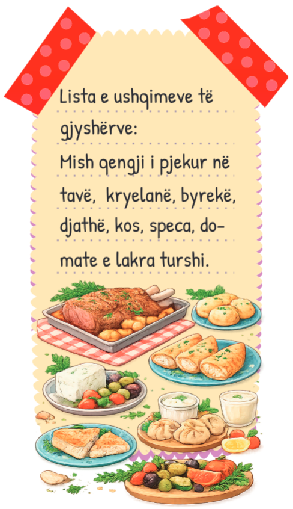
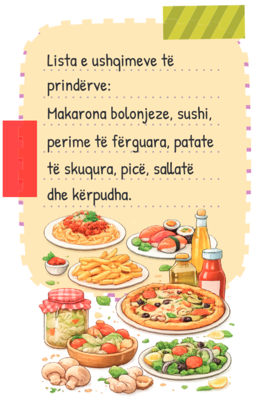

Kuzhina kosovare
Për ditëlindjen e Arit, prindërit organizuan një festë në shtëpi, ku i ftuan edhe të afërmit dhe shokët e shoqet e Arit. I bënë të gjitha parapërgatitjet e nevojshme dhe gjëja e fundit që mbeti ishte ushqimi që do të shërbenin për të ftuarit. Gjyshërit donin ushqime tradicionale, kurse prindërit donin të përgatitnin ushqime të tjera. Gjithsesi, në familjen e Arit diskutojnë për çdo gjë, para se të marrin ndonjë vendim bashkërisht.
Ja si u vendos:
Të shtrohet një sofër me ushqimet tradicionale të gjyshërve dhe një tavolinë me ushqimet që do të përgatisnin prindërit e Arit. Të dyja palët përgatitën listën e ushqimeve.


Në ditën e festës, të gjithë u mahnitën. Gjyshërit kishin paraqitur kuzhinën tradicionale shqiptare, ndërsa prindërit kuzhinën bashkëkohore. Në fund u shërbye edhe tortë.